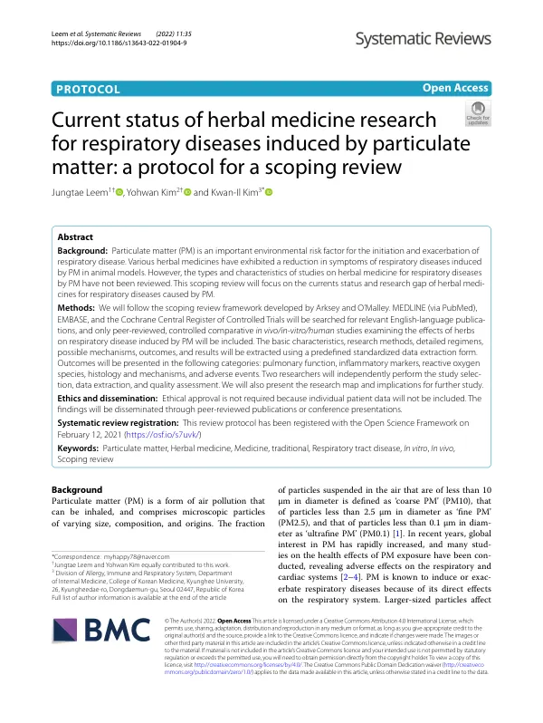

Current status of herbal medicine research for respiratory diseases induced by particulate matter: a protocol for a scoping review
Leem J, Kim Y, Kim KI
Systematic Reviews 11(1):35

첫 장 · 오픈액세스First page · open access
논문 소개Summary
미세먼지는 호흡기질환을 일으키고 악화시키는 중요한 환경 위험요인입니다. 동물실험에서 여러 한약이 미세먼지로 생긴 호흡기 증상을 줄였다는 보고가 있지만, 그런 연구들이 어떤 종류이고 어떤 방법으로 이루어졌는지 한자리에 모아 본 적이 없었습니다. 근거가 있는지 없는지를 따지기 전에, 지금까지 무엇이 얼마나 연구되었고 어디가 비어 있는지를 먼저 보아야 하는 단계였습니다.
이 논문은 그 지도를 그리기 위한 주제범위 문헌고찰의 연구계획서입니다. Arksey와 O'Malley의 틀을 따르기로 했고 MEDLINE, EMBASE, Cochrane Central Register of Controlled Trials에서 영어 문헌을 찾기로 했습니다. 동료심사를 거친, 대조군이 있는 생체 실험·시험관 실험·사람 대상 연구만 포함합니다. 기본 특성, 연구 방법, 구체적 투여 방법, 가능한 기전, 결과 지표와 결과를 미리 만든 표준 서식으로 뽑기로 했습니다. 결과는 폐기능, 염증 지표, 활성산소, 조직 소견과 기전, 이상반응으로 나누어 제시하고 연구 지도와 후속 연구 제언을 함께 내기로 했습니다.
주제범위 문헌고찰은 효과의 크기를 재는 것이 목적이 아니라 연구의 지형을 그리는 것이 목적입니다. 그래서 비뚤림 위험으로 문헌을 걸러 내지 않고 있는 그대로 모읍니다. 계획서이므로 결과는 없습니다. 개인 자료를 쓰지 않아 연구윤리 승인은 필요하지 않았고, 연구계획은 2021년 2월 12일 Open Science Framework에 등록했습니다.
Particulate matter is an important environmental risk factor for the onset and exacerbation of respiratory disease. Animal studies have reported that various herbal medicines reduce particulate-matter-induced respiratory symptoms, but no one had gathered what kinds of studies these were or how they were conducted. Before asking whether the evidence holds, the field needed a map of what had been studied and where the gaps lay.
This paper is the protocol for the scoping review that would draw that map. It follows the Arksey and O'Malley framework, searching MEDLINE, EMBASE and the Cochrane Central Register of Controlled Trials for English-language publications. Only peer-reviewed controlled in vivo, in vitro and human studies of herbs for particulate-matter-induced respiratory disease are eligible. Basic characteristics, methods, detailed regimens, possible mechanisms, outcomes and results would be extracted on a predefined standardised form. Results were to be presented as pulmonary function, inflammatory markers, reactive oxygen species, histology and mechanisms, and adverse events, together with a research map and implications for further study.
A scoping review does not set out to measure effect size; it charts the shape of a field. That is why studies are gathered as they are rather than filtered by risk of bias. Being a protocol, it reports no findings. Ethical approval was not required as no individual patient data are used, and the protocol was registered with the Open Science Framework on 12 February 2021.
인용Cite
Leem J, Kim Y, Kim KI. Current status of herbal medicine research for respiratory diseases induced by particulate matter: a protocol for a scoping review. Systematic Reviews. 2022;11(1):35. doi:10.1186/s13643-022-01904-9